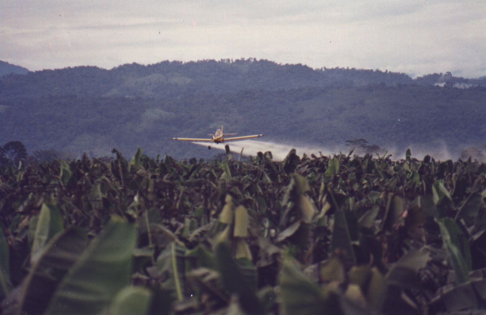

|
Bananas have had an incredible evolution and movement since their origination in Papua New Guinea. During their first movement, they began to be produced in the Philippines, and spread to the Tropic countries. However, the top three producers of bananas as of 2001 and 2002 are India, Uganda and China. The demand of the fruit has gone up so much that the production has risen by 93 million metric tons in only about 50 years. With the demand being so high, and continuously rising, bananas have become a very important factor in some of these countries economies. |
|||||||
|  |
But like any agricultural product, the banana is subject to many natural disasters. One of the bigger concerns, according to the 2013 Ministry of Food and Agriculture Article, are the destruction of the plant. Bananas take 9-11 months to mature. During those months, the plant is open to many dangers. One of the more common things that can ruin the banana plant is simply, wind. In order to protect the plant, windbreakers must be build around the fields. However, one of the more unavoidable threats to production is Fusarium Oxysporum. This causes the tunnel to become infected and rots the root or causes blackhead disease. |
| Data Type | 1961 | 1970 | 1980 | 1990 | 2000 | 2010 | 2014 |
|---|---|---|---|---|---|---|---|
| Total Production (millon metric tons): | 21.4 | 3.15 | 3.7 | 4.99 | 6.28 | 108.7 | 114.1 |
| Total Area (hectares): | 2008953 | 2712224 | 2775480 | 3774758 | 4558837 | 5412984 | 5393811 |
| Average yield (mt/ha): | 10.65231491 | 1.161408497 | 1.333102743 | 1.321939049 | 1.377544317 | 20.08134515 | 21.15387432 |